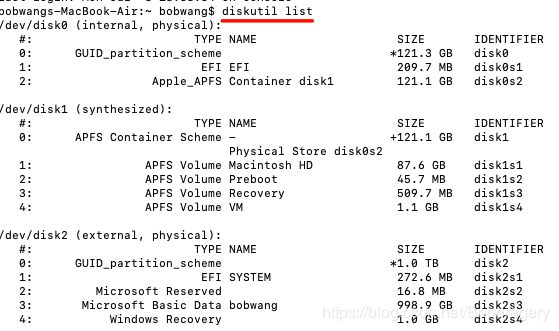

Mac移动硬盘不正确断开连接导致无法读取加载的解决方法
情况描述
本人有一台 2016年的 MacBook Air连接移动硬盘，如果不正常推出，比如是再连接一个移动硬盘时，或者没有正常推出，直接拔出来了，甚至有时候长时间连接，但是没有使用时，由于硬盘的自我休眠，这个时候再次链接就会遇到无法装载的问题，但是可以通过命令行查看到。
解决
1、在终端中用命令行输入
diskutil list
会弹出以下内容:
disk2就是我的外接移动硬盘

2、再输入
sudo diskutil mount /dev/disk2
这时候会出现不同的情况：
情况一
可以装载上
即使一直显示
volume on disk2 timed out waiting to mount
有可能已经装载上了
情况二
显示：
Volume on disk2 failed to mount; if it has a partitioning scheme, use "diskutil mountDisk"
If the volume is damaged, try the "readOnly" option
根据提示操作
sudo diskutil mountDisk /dev/disk2
显示：
Volume(s) mounted successfully
这种情况下基本能装载上了
如果有问题，你也可以通过这个只读查看下
diskutil mountDisk readOnly /dev/disk2
情况三
如果上面两个方法都不行，那再执行mout的之前执行
sudo fsck_hfs -fy /dev/disk2
在执行装载命令之前先执行上边这行命令
sudo diskutil mount /dev/disk2 或者 sudo diskutil mountDisk /dev/disk2